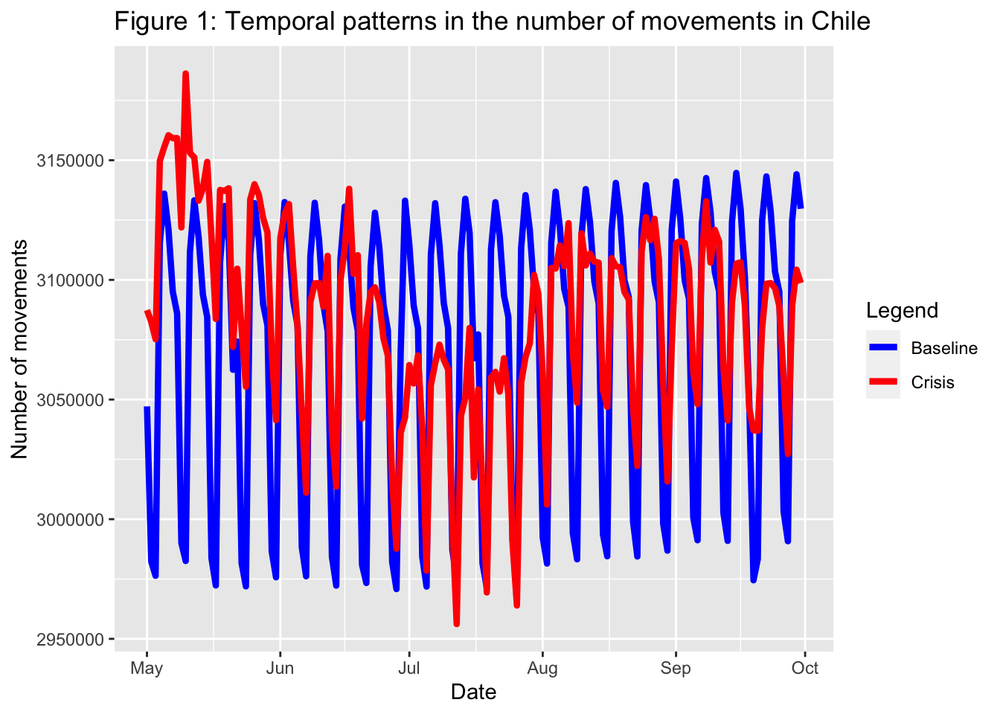
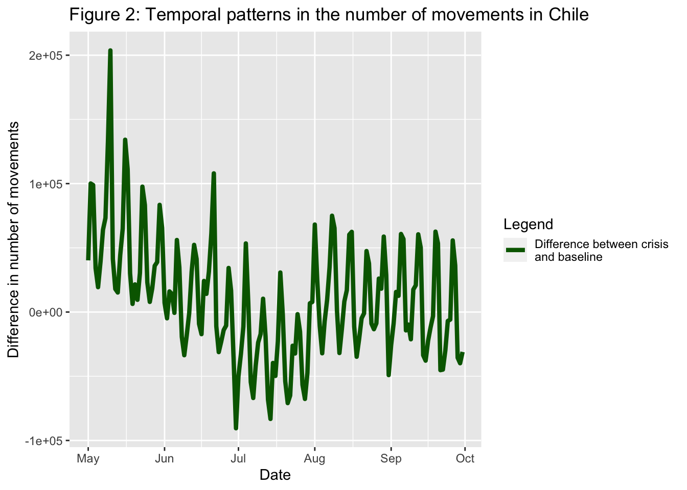
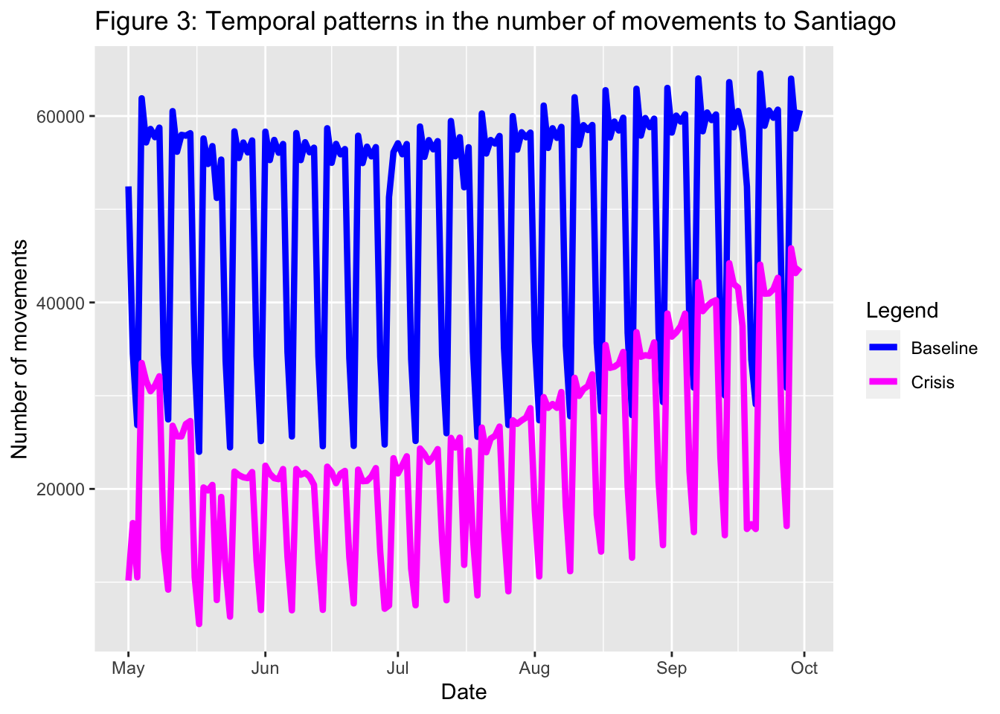
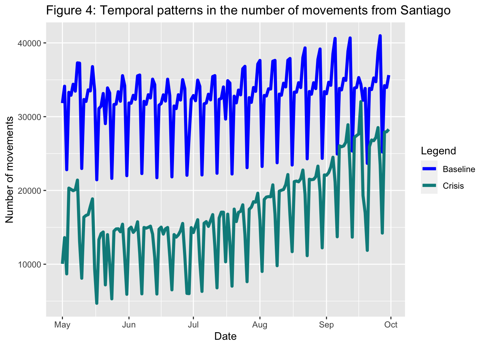
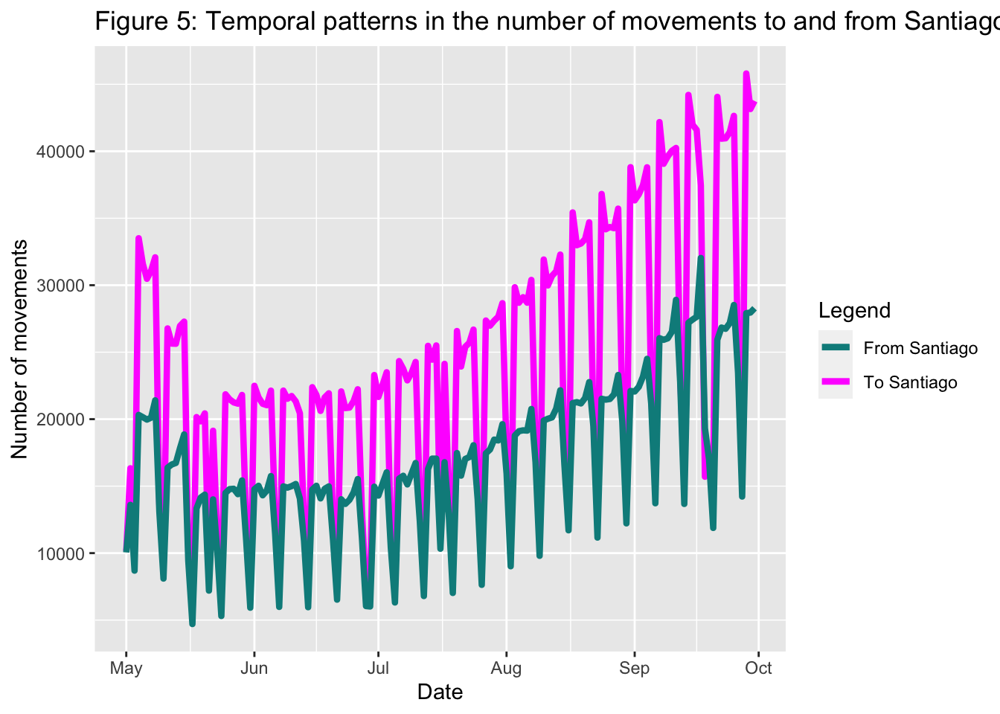
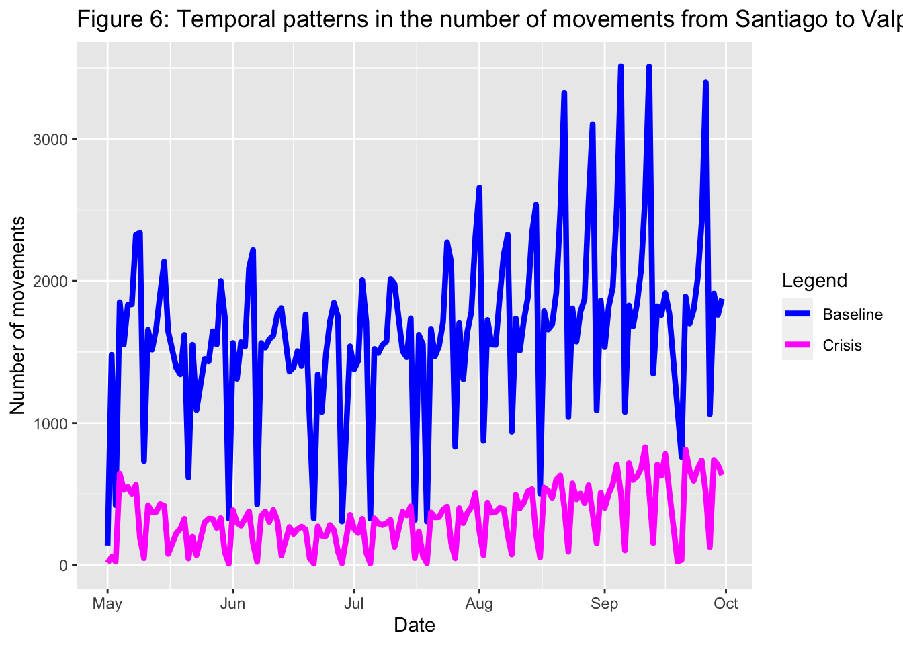
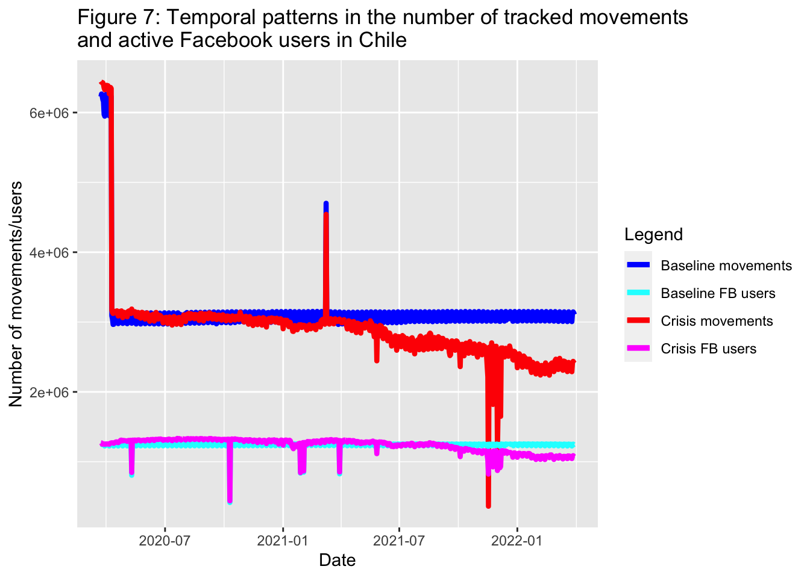
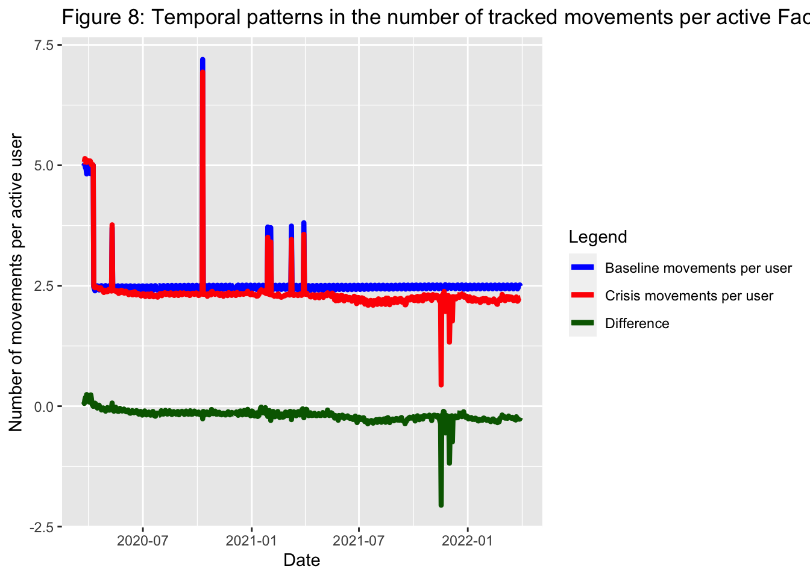

#Before getting started, please run the code below to avoid getting warnings and messages when executing the rest of the workbook:Exploring temporal patterns of human mobility
In this part of the workshop, we explore the temporal patterns displayed by human mobility data from Facebook Meta. The data was collected for Chile in the time period spanning from end of March of 2020 to the end of March 2022.
Dependencies
To analyse the data, we need R and the following R packages (see installation instructions here*). Once installed, you can use the R packages by loading them as libraries:
library(dplyr)
library(tidyverse)
library(zoo)
library(ggplot2)
library(lubridate)
library(tools)
library(mice)Loading and pre-processing the data
We start by looking at the temporal evolution of internal human mobility in Chile in the first few months after the first outbreak of COVID-19. To do so, we read the movement data corresponding to the months of May, June, July, August and September 2020. The data is stored as .rds files and can be read using the readRDS() function:
df_5 <- readRDS("data/movements/2020_05_mov.rds")
df_6 <- readRDS("data/movements/2020_06_mov.rds")
df_7 <- readRDS("data/movements/2020_07_mov.rds")
df_8 <- readRDS("data/movements/2020_08_mov.rds")
df_9 <- readRDS("data/movements/2020_09_mov.rds")Since we are interested in the evolution of trends in internal human mobility over this five-month period, we bind the data sets together using the function rbind(). This function appends datasets that share the same columns. We call the resulting data set df_mov.
df_mov <- rbind(df_5, df_6, df_7, df_8, df_9)But, what are the columns of df1, df2, df3, df4, df5 and df_mov? We can easily visualise a dataset and its contents with the glimpse() function. For example, for df_mov:
glimpse(df_mov)Rows: 630,635
Columns: 23
$ geometry <chr> "LINESTRING (-71.630859375 -36.5272625723…
$ date_time <chr> "2020-05-01 08:00:00", "2020-05-01 08:00:…
$ start_polygon_id <chr> "60871", "60871", "60871", "60871", "6087…
$ start_polygon_name <chr> "Ñuble", "Ñuble", "Ñuble", "Ñuble", "Ñubl…
$ end_polygon_id <chr> "60871", "60871", "60871", "60871", "6087…
$ end_polygon_name <chr> "Ñuble", "Ñuble", "Ñuble", "Ñuble", "Ñubl…
$ length_km <dbl> 0.00000, 0.00000, 0.00000, 0.00000, 0.000…
$ tile_size <dbl> 11, 11, 11, 11, 11, 11, 11, 11, 11, 11, 1…
$ country <chr> "CL", "CL", "CL", "CL", "CL", "CL", "CL",…
$ level <chr> "LEVEL3", "LEVEL3", "LEVEL3", "LEVEL3", "…
$ n_crisis <dbl> 228, 455, 989, 2293, 111, 23, 22, 3045, 1…
$ n_baseline <dbl> 236.2, 367.6, 1162.4, 1456.8, 92.6, 45.6,…
$ n_difference <dbl> -8.2, 87.4, -173.4, 836.2, 18.4, -22.6, -…
$ percent_change <dbl> -3.456998, 23.711340, -14.904590, 57.3604…
$ is_statistically_significant <dbl> 0, 0, 0, 0, 0, 0, 0, 0, 0, 0, 0, 0, 0, 0,…
$ z_score <dbl> -0.09754166, 1.02989015, -0.47284604, 4.0…
$ start_lat <dbl> -36.64353, -36.64353, -36.64353, -36.6435…
$ start_lon <dbl> -71.97498, -71.97498, -71.97498, -71.9749…
$ end_lat <dbl> -36.64353, -36.64353, -36.64353, -36.6435…
$ end_lon <dbl> -71.97498, -71.97498, -71.97498, -71.9749…
$ start_quadkey <chr> "21023300110", "21023300110", "2102330011…
$ end_quadkey <chr> "21023300110", "21023300110", "2102330011…
$ date_time2 <dttm> 2020-05-01 07:00:00, 2020-05-01 07:00:00…In the output, we first see the number of rows and columns in the data set. Then we see the name of each column, followed by the type of data stored in that column (e.g. <chr> for character), and a sample of the data values. Alternatively, if we only want to know the names of the columns, we can use the names() function:
names(df_mov) [1] "geometry" "date_time"
[3] "start_polygon_id" "start_polygon_name"
[5] "end_polygon_id" "end_polygon_name"
[7] "length_km" "tile_size"
[9] "country" "level"
[11] "n_crisis" "n_baseline"
[13] "n_difference" "percent_change"
[15] "is_statistically_significant" "z_score"
[17] "start_lat" "start_lon"
[19] "end_lat" "end_lon"
[21] "start_quadkey" "end_quadkey"
[23] "date_time2" As you might have guessed, each column represents a variable or a characteristic of the data stored in the dataset. Each row or data point in the resulting dataset df_mov represents a population flow between an origin and a destination location, taking place during a given time window, in this case, within the five-month period starting in May 2020. The information about the origin and destination of the flow is fully determined by the geometry column. Other columns also contain information about the start and end locations of the movements, such as start_polygon_id, start_polygon_name, end_polygon_id, end_polygon_name, start_lat, start_lon, end_lat, end_lon, start_quadkey and end_quadkey. The information about the time window in which each population flow takes place is contained in the date_time column.
In the next few sections, we will focus only on three variables, namely, date_time, n_crisis and n_baseline. But first, let’s talk a bit more about the datetime format.
Choice of variables for the analysis
Of all the columns in the dataset df_mov, three of them are particularly relevant for the analysis in this section of the workshop, n_crisis, n_baseline and date_time. Firstly, the variable n_crisis gives us the size of a given flow, i.e. the number of people moving from an origin to a destination. For the first flow, this would be:
df_mov$n_crisis[[1]][1] 228But is this number large or small? In order to establish a benchmark, we can look at n_baseline. This variable tells us about the number of people that we would expect travelling from origin to destination on the same weekday at the same time of the day in normal conditions, i.e. pre-pandemic.
df_mov$n_baseline[[1]][1] 236.2The fact that the value of n_crisis is smaller than n_baseline for the first flow suggests that during the pandemic people were moving less between the particular origin-destination pair of locations corresponding to the first flow in the dataset.
However, in order to draw conclusions at the population level, looking at a data point in isolation is not enough. We can gain much more meaningful insights if we look at much larger amounts of data as well as the temporal evolution of the observed patterns. To do this, we need to look into the date_time variable, that tells us the 8-hour time window in which a flow takes place. For example, we can look up the value of date_time for the first flow recorded in df_mov:
df_mov$date_time[[1]][1] "2020-05-01 08:00:00"Therefore, the first flow in the dataset df_mov took place between 00:00 and 08:00 of the 1st of May 2020. However, for the analysis in this workbook, we are interested only in the patterns taking place at the daily scale, so the information regarding the time window within the day is irrelevant.
Extracting the calendar date for each population flow
To explore the variation in the number of flows at the daily level, we need to first extract only the date from each movement. This can be done by running the code below, where we create a new column in df_mov named date. This new column stores only the information corresponding to date which can be obtained by applying the as.Date() function to the data from the date_time column. This function allows us to convert character data into objects of class Date representing calendar dates and following a specified format (in this case, year-month-day).
df_mov$date <- as.Date(df_mov$date_time, format = "%Y-%m-%d")Grouping data by calendar date
Since we are interested in the number of movements taking place on a daily basis, we need to aggregate the information from flows that take place on the same day. Specifically, we need to sum all the values of n_crisis corresponding to flows from the same day. This can be done, firstly, by passing the df_mov dataset to the group_by() function and specifying that we want to group the data according to the information stored in the df_mov$date column that we just created. This action can be achieved via the pipeline operator %>%, which simply feeds the results of one operation into the next operation. For those familiar with the mathematical language, the pipe operator is equivalent to the function composition operation. But the group_by() function alone will not give the desired output, so we follow it by the summarise() function with an appropriate action to perform, in this case the sum of the values of n_crisis for all the entries that share a date. The output is a dataset containing two columns, named total and df_mov$date. We rename the second column of the resulting dataset to date instead of df_mov$date. The final dataset is df_crisis.
df_crisis <- df_mov %>% group_by(df_mov$date) %>% summarise(total = sum(n_crisis)) %>% rename("date"="df_mov$date")We apply a very similar process to sum the values of n_baseline corresponding to flows from the same day. The resulting dataset is df_baseline.
df_baseline <- df_mov %>% group_by(df_mov$date) %>% summarise(total = sum(n_baseline)) %>% rename("date"="df_mov$date")Internal movements at the nation-wide scale
With df_crisis and df_baseline, we are ready to create our first figure. The goal is to show the daily evolution of internal movements at the nation-wide scale in Chile during the five-month period starting in May 2020. Therefore, the figure will include information about the date on the x-axis and the number of movements on the y-axis. Furthermore, the figures should allow us to compare the trends in the period of interest with the baseline levels of internal mobility. Hence, our plot will include two components: a line showing the evolution of internal movements from May to September 2020 and a line representing the baseline.
To generate the figure, we use the ggplot2 package. First, ggplot() is used to construct the initial plot object, and is followed by a plus sign ( + ) to add components to the plot. Note that we add a legend to specify the component of the plot that refers to the “crisis” or pandemic period and the component that refers to the baseline.
ggplot() +
geom_line(mapping = aes(x = date, y = total, color="Baseline"),
data = df_baseline, linewidth = 1.5) +
geom_line(mapping = aes(x = date, y = total, color = "Crisis"),
data = df_crisis, linewidth = 1.5) +
scale_color_manual(values = c( "Crisis" = "red", "Baseline" = "blue"),
labels = c("Baseline", "Crisis")) +
labs(color = "Legend",
title = "Figure 1: Temporal patterns in the number of movements in Chile",
x = "Date",
y = "Number of movements")
We can also plot the difference between the levels of internal migration during the pandemic period and the baseline. First we create a new dataset df_difference with a column named difference as follows:
df_difference <- df_crisis
df_difference$difference <- df_crisis$total - df_baseline$totalThen we generate a plot following a procedure as above:
ggplot() +
geom_line(mapping = aes(x = date, y = difference, color = "Difference"),
data = df_difference, linewidth = 1.5) +
scale_color_manual(values = c("Difference" = "darkgreen"),
labels = c("Difference between crisis \nand baseline")) +
labs(color = "Legend",
title = "Figure 2: Temporal patterns in the number of movements in Chile",
x = "Date",
y = "Difference in number of movements")
Internal movements involving Santiago province
Up to this point, we have focused on the temporal trends of internal mobility at the nation-wide scale. Thanks to the fine level of detail in our original datasets, we can focus the analysis on more specific areas or regions. In the remainder of this sections, we will analyse movements that involve Santiago, Chile’s capital city. As we pointed out in section Section 1.2, there are several columns in the dataset df_mov that contain information about the start and end locations of the movements. The spatial variability of internal population flows will be explored in more detail in the next section of the workshop. But for now, we will focus on the columns names start_polygon_name and end_polygon_name, which contain the name of the province where a flow starts or ends respectively.
Internal movements to Santiago
Hence, to obtain only the movements that have the province of Santiago as their destination, we need to filter the data set df_mov so that it only contains rows where the value of end_polygon_name is Santiago. In R, this can be done very simply by running the lines of code below. The first line, keeps only the flows that start outside of Santiago and stores the result in the df_mov_to dataset. The second line, keeps only the flows that end in Santiago and stores the result in the df_mov_to dataset. We call the resulting data set df_move_to.
df_mov_to <- filter(df_mov, start_polygon_name != 'Santiago')
df_mov_to <- filter(df_mov_to, end_polygon_name == 'Santiago')Then, like before, we create a new column for df_mov_to containing only information about the date (and not the time) in year-month-day format:
df_mov_to$date <- as.Date(df_mov_to$date_time, format = "%Y-%m-%d")and we follow this action by grouping the data by date. We generate the datasets df_to_crisis and df_to_baseline, which contain the sum of the values of n_crisis and n_baseline for flows that happen on the same day:
df_to_crisis <- df_mov_to %>% group_by(df_mov_to$date) %>% summarise(total = sum(n_crisis)) %>% rename("date"="df_mov_to$date")df_to_baseline <- df_mov_to %>% group_by(df_mov_to$date) %>% summarise(total = sum(n_baseline)) %>% rename("date"="df_mov_to$date")With all these elements, we can generate a figure showing the trends in the number of movements from any province outside of Santiago to Santiago, both during the 5-month crisis period during the pandemic and during the baseline period:
ggplot() +
geom_line(mapping = aes(x = date, y = total, color="Baseline"),
data = df_to_baseline, linewidth = 1.5) +
geom_line(mapping = aes(x = date, y = total, color = "Crisis"),
data = df_to_crisis, linewidth = 1.5) +
scale_color_manual(values = c( "Crisis" = "magenta", "Baseline" = "blue"),
labels = c("Baseline", "Crisis")) +
labs(color = "Legend",
title = "Figure 3: Temporal patterns in the number of movements to Santiago",
x = "Date",
y = "Number of movements")
Internal movements from Santiago
An analogous analysis can be carried out for movements with origin in the province of Santiago and destination elsewhere. To do this, we follow exactly the same steps as before but modifying the way in which we filter df_mov, and replacing the names of new variables where appropriate (e.g. df_mov_from instead of df_mov_to):
df_mov_from <- filter(df_mov, start_polygon_name == 'Santiago')
df_mov_from <- filter(df_mov_from, end_polygon_name != 'Santiago')df_mov_from$date <- as.Date(df_mov_from$date_time, format = "%Y-%m-%d") df_from_crisis <- df_mov_from %>% group_by(df_mov_from$date) %>% summarise(total = sum(n_crisis)) %>% rename("date"="df_mov_from$date")df_from_baseline <- df_mov_from %>% group_by(df_mov_from$date) %>% summarise(total = sum(n_baseline)) %>% rename("date"="df_mov_from$date")ggplot() +
geom_line(mapping = aes(x = date, y = total, color="Baseline"),
data = df_from_baseline, linewidth = 1.5) +
geom_line(mapping = aes(x = date, y = total, color = "Crisis"),
data = df_from_crisis, linewidth = 1.5) +
scale_color_manual(values = c( "Crisis" = "darkcyan", "Baseline" = "blue"),
labels = c("Baseline", "Crisis")) +
labs(color = "Legend",
title = "Figure 4: Temporal patterns in the number of movements from Santiago",
x = "Date",
y = "Number of movements")
We can also compare the movements to and from Santiago province, this time omitting the baseline trends for clarity:
ggplot() +
geom_line(mapping = aes(x = date, y = total, color="To"),
data = df_to_crisis, size = 1.5) +
geom_line(mapping = aes(x = date, y = total, color = "From"),
data = df_from_crisis, size = 1.5) +
scale_color_manual(values = c( "To" = "magenta", "From" = "darkcyan"),
labels = c("From Santiago", "To Santiago")) +
labs(color = "Legend",
title = "Figure 5: Temporal patterns in the number of movements to and from Santiago",
x = "Date",
y = "Number of movements")
Internal movements between Santiago and Valparaíso
It is possible to look at movements beetween a specified origin and destination. Here, we focus on the flow of people between Santiago and a popular destination province for Santiaguinos, Valparaíso. To explore the movements from Santiago to Valparaíso, you can run the code below:
df_mov_between1 <- filter(df_mov, start_polygon_name == 'Santiago')
df_mov_between1 <- filter(df_mov_between1, end_polygon_name == 'Valparaíso')df_mov_between1$date <- as.Date(df_mov_between1$date_time, format = "%Y-%m-%d")df_between1_crisis <- df_mov_between1 %>% group_by(df_mov_between1$date) %>% summarise(total = sum(n_crisis)) %>% rename("date"="df_mov_between1$date")df_between1_baseline <- df_mov_between1 %>% group_by(df_mov_between1$date) %>% summarise(total = sum(n_baseline)) %>% rename("date"="df_mov_between1$date")ggplot() +
geom_line(mapping = aes(x = date, y = total, color="Baseline"),
data = df_between1_baseline, size = 1.5) +
geom_line(mapping = aes(x = date, y = total, color = "Crisis"),
data = df_between1_crisis, size = 1.5) +
scale_color_manual(values = c( "Crisis" = "magenta", "Baseline" = "blue"),
labels = c("Baseline", "Crisis")) +
labs(color = "Legend",
title = "Figure 6: Temporal patterns in the number of movements from Santiago to Valparaíso",
x = "Date",
y = "Number of movements")
Advanced: tracked internal movements in relation to the active population of Facebook users
So far, we have looked at the 5-month period starting in May 2020 and spanning throughout the Chilean winter. But, as mentioned at the beginning of the workbook, Facebook Meta collected data for Chile in the two-year period spanning from the end of March of 2020 to the end of March 2022. As we saw in Section 1.2, the data is organised in files by month, and we can load them individually. However, since we are going to look at many months, we can automate the data-reading process. This is done by first, specifying the path to the folder where the movement data files are stored, and then, using a for loop to read each of the files in the folder and bind them together. Getting a full understanding of the code below is out of the scope of this workshop, but we have included comments starting with the ( # ) symbol to indicate what each line of code does in case you are curious.
# Get a list of file paths in the folder
folder_path <- "data/movements/"
file_paths <- list.files(path = folder_path, pattern = "\\.rds$", full.names = TRUE)
# Create an empty list to store the data frames
dfs <- list()
# Loop through the file paths
for (file_path in file_paths) {
# Read each file as a data frame
df <- readRDS(file_path)
# Store the data frame in the list
dfs <- append(dfs, list(df))
}
# Bind all the data frames into a single data frame
df_mov_full <- bind_rows(dfs)In the previous sections, we have focused on analysing movement data during the pandemic and comparing it to a baseline period. While some insights can be gained by looking only at this data, it is important to consider the number of active Facebook users. The reason for this can be illustrated through the following examples. Suppose that the number of Facebook users drops to zero, then no movements would be recorded. However, this does not mean there are no movements taking place. Conversely, suppose Facebook becomes very popular and the whole population starts using it, then more movements would probably be recorded but this does not mean that people started moving more. Hence, it can be very useful to look at the number of movements per active user and analyse how this quantity evolves both during the pandemic and the baseline.
Below, we load data for the population of active Facebook users:
# Get a list of file paths in the folder
folder_path <- "data/FB_population/"
file_paths <- list.files(path = folder_path, pattern = "\\.rds$", full.names = TRUE)
# Create an empty list to store the data frames
dfs <- list()
# Loop through the file paths
for (file_path in file_paths) {
# Read each file as a data frame
df <- readRDS(file_path)
# Store the data frame in the list
dfs <- append(dfs, list(df))
}
# Bind all the data frames into a single data frame
df_mov_full_pop <- bind_rows(dfs)Pre-processing the data
Like the movement datasets, the Facebook population data is aggregated into 8-hour time windows but here, we are only interested in the variation at the daily level. Therefore, we group by date the number of movements and the number of active users during the crisis period.
df_mov_full$date <- as.Date(df_mov_full$date_time, format = "%Y-%m-%d")df_mov_full_pop$date <- as.Date(df_mov_full_pop$date_time, format = "%Y-%m-%d")df_mov_full_crisis <- df_mov_full %>% group_by(df_mov_full$date) %>% summarise(n_crisis = sum(n_crisis)) %>% rename("date"="df_mov_full$date")df_mov_full_pop_crisis <- df_mov_full_pop %>% group_by(df_mov_full_pop$date) %>% summarise(pop_n_crisis = sum(n_crisis)) %>% rename("date"="df_mov_full_pop$date")Once the grouping by date is done, we merge the resulting datasets for movements and population of active Facebook users according to the date column:
df_full_crisis <- merge(df_mov_full_crisis, df_mov_full_pop_crisis, by = "date", all.x = TRUE)The original data for the population of active Facebook users is missing some dates, so we estimate the missing data using Multivariate Imputation by Chained Equations (with the mice package).
# Create a mice object with only the column you want to impute
df_to_complete <- mice(df_full_crisis[, -which(names(df_full_crisis) == "n_crisis")])
iter imp variable
1 1 pop_n_crisis
1 2 pop_n_crisis
1 3 pop_n_crisis
1 4 pop_n_crisis
1 5 pop_n_crisis
2 1 pop_n_crisis
2 2 pop_n_crisis
2 3 pop_n_crisis
2 4 pop_n_crisis
2 5 pop_n_crisis
3 1 pop_n_crisis
3 2 pop_n_crisis
3 3 pop_n_crisis
3 4 pop_n_crisis
3 5 pop_n_crisis
4 1 pop_n_crisis
4 2 pop_n_crisis
4 3 pop_n_crisis
4 4 pop_n_crisis
4 5 pop_n_crisis
5 1 pop_n_crisis
5 2 pop_n_crisis
5 3 pop_n_crisis
5 4 pop_n_crisis
5 5 pop_n_crisis# Perform the imputation
df_complete_crisis <- complete(df_to_complete)
df_full_crisis$pop_n_crisis <- df_complete_crisis$pop_n_crisisSimilarly, we group by date the number of movements and the number of active users during the baseline. Then, we merge the resulting datasets for movements and population of active Facebook users according to the date column and finally, we estimate any missing values using Multivariate Imputation by Chained Equations (with the mice package).
df_mov_full_baseline <- df_mov_full %>% group_by(df_mov_full$date) %>% summarise(n_baseline = sum(n_baseline)) %>% rename("date"="df_mov_full$date")df_mov_full_pop_baseline <- df_mov_full_pop %>% group_by(df_mov_full_pop$date) %>% summarise(pop_n_baseline = sum(n_baseline)) %>% rename("date"="df_mov_full_pop$date")df_full_baseline <- merge(df_mov_full_baseline, df_mov_full_pop_baseline, by = "date", all.x = TRUE)# Create a mice object with only the column you want to impute
df_to_complete <- mice(df_full_baseline[, -which(names(df_full_baseline) == "n_baseline")])
iter imp variable
1 1 pop_n_baseline
1 2 pop_n_baseline
1 3 pop_n_baseline
1 4 pop_n_baseline
1 5 pop_n_baseline
2 1 pop_n_baseline
2 2 pop_n_baseline
2 3 pop_n_baseline
2 4 pop_n_baseline
2 5 pop_n_baseline
3 1 pop_n_baseline
3 2 pop_n_baseline
3 3 pop_n_baseline
3 4 pop_n_baseline
3 5 pop_n_baseline
4 1 pop_n_baseline
4 2 pop_n_baseline
4 3 pop_n_baseline
4 4 pop_n_baseline
4 5 pop_n_baseline
5 1 pop_n_baseline
5 2 pop_n_baseline
5 3 pop_n_baseline
5 4 pop_n_baseline
5 5 pop_n_baseline# Perform the imputation
df_complete_baseline <- complete(df_to_complete)
df_full_baseline$pop_n_baseline <- df_complete_baseline$pop_n_baselineThe merged datasets for the crisis period and the baseline can be merged according to the date column:
df_full <- merge(df_full_crisis, df_full_baseline, by = "date", all.x = TRUE)To obtain the number of movements per active Facebook user on a given date, we can divide the number of movements on that date by the total number of active Facebook users on the same date. This can be done for both the crisis and baseline periods and the results can be stored in new columns. Furthermore, we compute the difference in the number of movements per active Facebook user between the crisis and baseline periods and store it in the difference_div column:
df_full$n_crisis_div <- df_full$n_crisis/df_full$pop_n_crisis
df_full$n_baseline_div <- df_full$n_baseline/df_full$pop_n_baseline
df_full$n_difference_div <- df_full$n_crisis_div - df_full$n_baseline_divAnalysisng the results
Below we plot the baseline number of tracked movements and Facebook active users as well as the same quantities for the crisis period:
ggplot() +
geom_line(mapping = aes(x = date, y = n_baseline, color="Baseline"),
data = df_full, size = 1.5) +
geom_line(mapping = aes(x = date, y = n_crisis, color = "Crisis"),
data = df_full, size = 1.5) +
geom_line(mapping = aes(x = date, y = pop_n_baseline, color="Baseline FB users"),
data = df_full, size = 1.5) +
geom_line(mapping = aes(x = date, y = pop_n_crisis, color = "Crisis FB users"),
data = df_full, size = 1.5) +
scale_color_manual(values = c( "Crisis" = "red", "Baseline" = "blue", "Crisis FB users" = "magenta", "Baseline FB users" = "cyan"), labels = c("Baseline movements", "Baseline FB users", "Crisis movements", "Crisis FB users")) +
labs(color = "Legend", title = "Figure 7: Temporal patterns in the number of tracked movements \nand active Facebook users in Chile",
x = "Date",
y = "Number of movements/users")
Disregarding the spikes which are likely due to anomalies in the data collection process applied by Facebook, we observe that, generally speaking, both the baseline number of movements and the number of active Facebook users remain constant through the plotted period. In the case of the number of movements and the number of active Facebook users during the pandemic, they both experience a decline. But, is the decline observed in the number of movements a result of the decline in the number of active Facebook users? To answer this question, we can plot the number of tracked movements per active Facebook user, both for the baseline and the pandemic period. We can also plot the difference between these two quantities:
ggplot() +
geom_line(mapping = aes(x = date, y = n_baseline_div, color="Baseline movements per user"),
data = df_full, size = 1.5) +
geom_line(mapping = aes(x = date, y = n_crisis_div, color = "Crisis movements per user"),
data = df_full, size = 1.5) +
geom_line(mapping = aes(x = date, y = n_difference_div, color = "Difference"),
data = df_full, size = 1.5) +
scale_color_manual(values = c( "Crisis movements per user" = "red", "Baseline movements per user" = "blue", "Difference" = "darkgreen"), labels = c("Baseline movements per user", "Crisis movements per user", "Difference")) +
expand_limits(y = 0) +
labs(color = "Legend", title = "Figure 8: Temporal patterns in the number of tracked movements per active Facebook user in Chile",
x = "Date",
y = "Number of movements per active user")
This last figure shows that since the start of the pandemic, the number of movements per active Facebook user has been consistently lower than during the baseline period. However, the difference in trends between the crisis and basline periods is not as large as it might have been suggested by looking at the raw number of movements without taking into account the active population of users (e.g. the line correspondingto the number of movements during the crisis period from Figure 7).